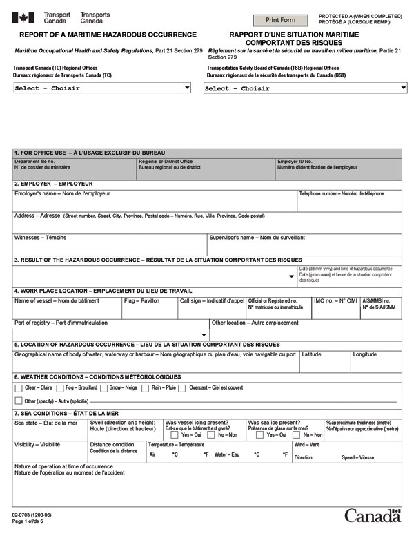
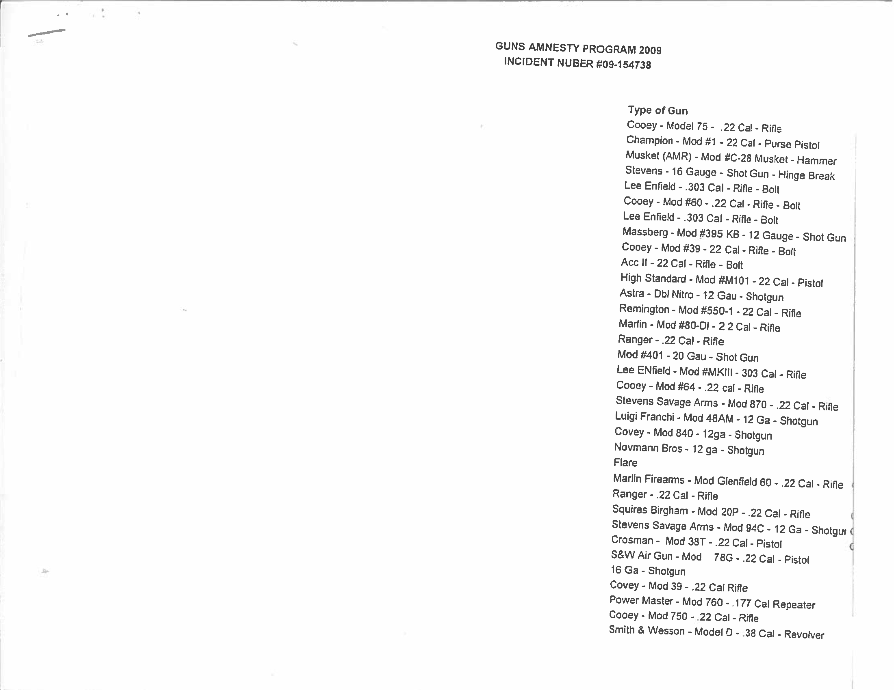
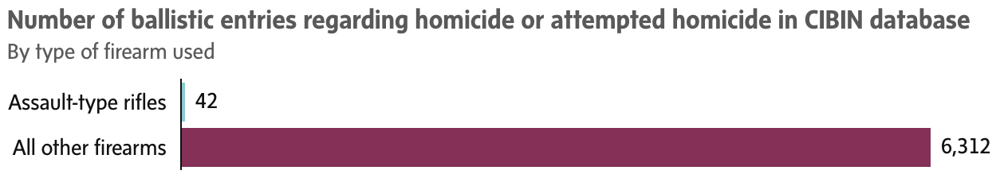
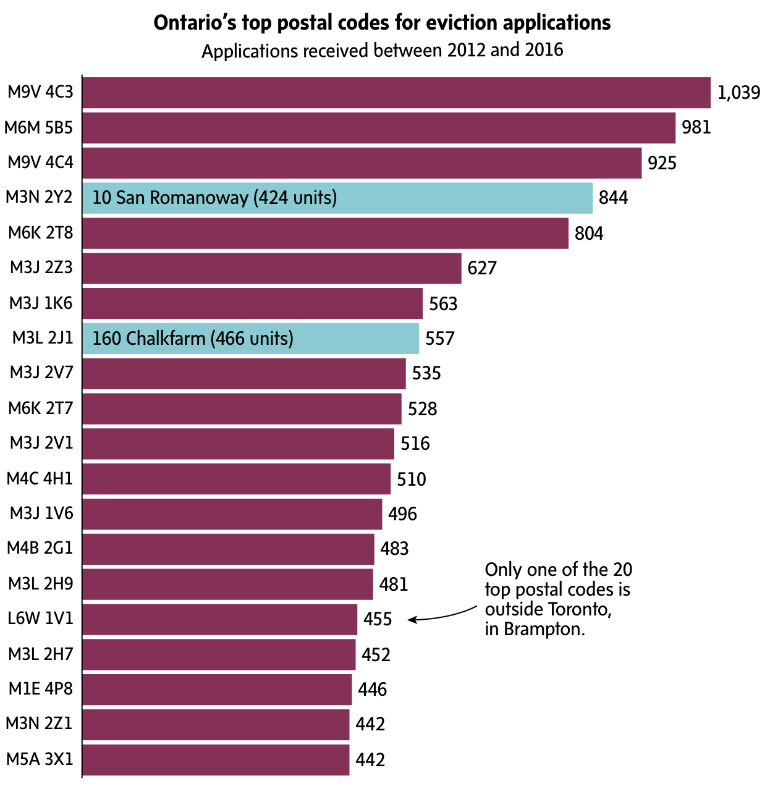

FOIs and data journalism
bit.ly/2HR391k
You can also find the GitHub repository for this presentation at:
About me

Tom Cardoso, crime and justice reporter and data journalist at The Globe and Mail
Why give this talk?
- I’ve specialized in using FOIs to extract large databases from police, municipal, provincial and federal governments.
- So far, I’ve won more battles for access than I’ve lost.
- This is a vastly underused technique in Canada.
What we’ll cover today
- FOI basics
- Why use data FOIs?
- So you’re filing a data FOI
- You’ve obtained a huge dataset. Now what?
- Tools to help you stay on top of your data FOIs
- Example stories
- Lightning round tips
1-minute FOI recap
All documents (including but not limited to research, presentations, documents, briefing notes, memos, summaries, communications, reports, etc.) relating to amnesty, pardons, clemency, expungement of records, etc. following the national legalization of cannabis for people who were previously charged or convicted of a cannabis-related crime. From Jan. 1, 2015 to present (September 19, 2018). Please provide records as they become available and call me immediately for any clarifications. Exclude media monitoring and cabinet confidences.
WHERE WHAT WHEN HOW
All documents (including but not limited to research, presentations, documents, briefing notes, memos, summaries, communications, reports, etc.) relating to amnesty, pardons, clemency, expungement of records, etc. following the national legalization of cannabis for people who were previously charged or convicted of a cannabis-related crime. From Jan. 1, 2015 to present (September 19, 2018). Please provide records as they become available and call me immediately for any clarifications. Exclude media monitoring and cabinet confidences.
Why use data FOIs?
Several reasons…
- In Canada, we don’t file these very much. Journalists in the U.S. learned long ago that these FOIs work.
- Data is pliable. Why trust a government’s aggregated/summarized data when you can get the raw stuff?
- Often, these databases go completely unanalyzed by the agencies that maintain them.
The biggest reason, perhaps:
These requests are often easier than regular FOIs.
So you’re filing a data FOI
In some cases, it doesn’t hurt to go through the front door and just ask for the database without an FOI. You’d be surprised how often this works – particularly for municipal governments. Tell them you’d rather save everyone the time and effort of having to deal with an FOI.
Before filing, do your homework
- Find out the name of the database (this is key!). It’s likely very boring and uninspired.
- Who administers it? Is there any documentation, handbooks or manuals online?
- Is the structure (column names) for this database listed anywhere? Protip: This is often referred to as the database “schema.”
What do forms used for this database look like?
Writing your request
The goal here is to get a spreadsheet (.xls, .xlsx, .csv) or database (.sql) file. So we need to be explicit:
Please provide a machine-readable, itemized (i.e. record-level) export in database or spreadsheet format (i.e. Microsoft Excel, Access, SQL or CSV file format, not .PDF) of the FATE firearms database, going back to when the database was created, along with a sample “FATE report” form which police forces use to request a trace.
And, if you don’t know the name of the database… list all the fields you’re hoping for.
Please provide a machine-readable itemized database or spreadsheet (i.e. Microsoft Excel, Access, SQL or CSV file format, not .PDF) of seized and surrendered firearms (via amnesty programs or the like) firearms from 2000 to present day. The database should include fields for: make, model, and registration category ((a) restricted, (b) prohibited or (c) non-restricted) for the firearm; whether the firearm was seized or surrendered; date the firearm was seized or surrendered; location (postal code is sufficient) where the firearm was seized or surrendered; whether the gun was suspected to have been used in a criminal offence or criminal activity (i.e. a “crime gun”); whether the gun was attempted to be traced, and if so, successfully or not; if the gun was successfully traced, whether it was traced to the United States; if the gun was successfully traced, whether it was traced to a domestic source; if the gun was successfully traced, whether it was traced to a licensed gun owner; if the gun was successfully traced, whether it was reported as lost (or stolen) to the RCMP; if the gun was successfully traced, the date and location of its registration with the RCMP; if a crime gun, the number and type of crimes the gun was connected to.
Asking for a machine-readable, itemized file is key. Otherwise, you end up with:
File your request. And prepare yourself for the inevitable phone call or email:
- “I don’t even know where to begin with this request”
- “Who am I supposed to send this to?”
- “I have no idea what any of this means”
- “That sounds like a lot of files”
- “We’ve never received a request like this”
- “You’ll never get this”
(These are all real responses I’ve gotten from FOI coordinators)
Once your FOI has been received, reach out to the coordinator and reiterate what you’re after. They will appreciate it. You can also use this as an opportunity to ask to be connected with a database administrator.
Some offices will be stubborn.
- “We're not required to create new files”
- “I don’t know how to redact this”
- “We don’t have any data that exactly matches your request”
Tip: If filing the same request to multiple agencies (say, several police forces within a province), you can use this to your advantage:
- Play the agencies off each other.
- Use one agency to get data from another agency.
Regarding costs
“Dumping” (actual technical term) a database is easier than you think. Take any warnings about high costs with a grain of salt. Often, I’ve had to pay nothing or a minimal fee to have data extracted. FOI coordinators have told me in the past that they were surprised at how easy it was to produce the data.
Some other issues you will run into…
- Problem: They don’t want to release it in spreadsheet form.
- Problem: You get the response and they redacted everything you cared about.
You’ve got a 750,000-row dataset. Now what?
- Expect to have to clean the data. Police databases, for instance, are usually a total mess.
- Start simple. Calculate averages, count up items in the data. Make some simple charts to get a “feel” for the structure of the data.
- Next, “interview” the data. Build out an analysis that can answer your interview questions.
- Write a methodology story.
Consider learning a programming language.
If your dataset is large enough, Excel and Google Docs will both choke. You’ll need to pick up some coding skills. Don’t worry: it’s fun, and easier than it looks!
I recommend a statistical programming language called R.
It’s what I use every single day.Shameless plug: if you want to use R, consider using The Globe and Mail’s startr package. It’s a starter template for data journalism in R.
Staying on top of your data FOIs
My FOI request tracking spreadsheet
Piggyback, a bookmarklet to easily file federal piggyback FOIs
Klaxon, a free self-hosted web service that notifies you when a web page changes
Stories
We filed more than 40 FOIs for this story. Ultimately, we obtained a copy of CIBIN, Canada’s national ballistics database, which showed an assault rifle ban would do little to reduce gun violence.
We obtained a full dump (500,000 rows) of Ontario’s Landlord and Tenant Board case management system.
A colleague’s protracted FOI fight led to a story on suicides on the Toronto Transit Commission’s subway system, which found the agency isn’t analyzing its own data
Lightning round tips
- Once your request is complete, consider filing a meta-FOI.
- Companies don’t have a right to privacy. Don’t get pushed around on this!
- If you’re looking for a list of all the databases managed by an agency, file an FOI asking for a list.
- If you want to zoom out even further, consider filing a meta-piggyback: ask for a list of the text of all completed FOIs for that ministry.
Tons of other tips available at my tipsheet.